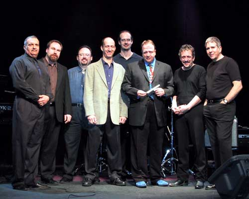

Roomful Of Blues

Великий Каунт Бейси сказал о них: «Самая горячая блюзовая команда, которую я когда-либо слышал». По мнению журнала DownBeat, они «вне конкуренции». Нет сомнений, Roomful of Blues, отмечающая сейчас свое 35-тилетие, достойна и этих слов и других восторженных откликов. Начиная с 1967 года, группа исполняет микс быстрого свинга, блюза и соула, глубоко уходящий корнями в исконно американскую музыку. Roomful of Blues завоевали четыре номинации Грэмми и массу других свидетельств признания, включая три премии W. C. Handy Blues Awards. Группа всегда могла похвастаться великолепным музыкальным составом, куда входит «звездная» секция духовых - Roomful завоевала W. C. Handy Blues Award 2003 в номинации «Лучший Инструменталист». Выступления Roomful of Blues, проходящие практически в режиме нон-стоп на протяжении последних 35 лет, принесли ей благосклонность критики, успех в радио чартах и легион фанатов во всем мире. Международный Опрос Общественного Мнения (International Critics Poll) престижного журнала DownBeat дважды приносил группе звание Best Blues Band. Сейчас пишется новая глава в истории Roomful: команда подписала контракт с Alligator Records, где 11 марта вышел их новый релиз THAT'S RIGHT!
Функционировать 35 лет - это не просто техника выживания, а, скорее, свидетельство приверженности Roomful of Blues своей оригинальности и ее способность постоянно развиваться. Конечно, с годами первоначальный состав Roomful претерпел изменения, но они всегда были одной из самых крепких, самых веселых в мире блюзовых команд. В настоящее время группа, состоящая из восьми музыкантов, ведомых гитаристом Крисом Вашоном, звучит свежее, мощнее и жестче, чем когда-либо. С новыми участниками - вокалистом и исполнителем на губной гармони Марком Дюфрэйном, басистом Брэдом Халленом, барабанщиком Джэйсоном Корбьере, клавишником Марком Стивенсом и баритон/тенор-саксофонистом Марком Эрли, примкнувшим к ветеранам в лице тенор/альт-саксофониста Рича Латэйя (дольше всех играющего в группе) и трубача Боба Эноса - THAT'S RIGHT! стал смесью свинга и рок-н-ролла, исполняемых с неистовством и целеустремленностью. Начиная с первого же «ударного» трека, новый альбом «Румфулов» сразу пленяет и звучанием классического блюза, и новаторским подходом к быстрой танцевальной музыке исполняемой большой «бандой» - то, что сделало их знаменитыми. Настоящие жемчужины THAT'S RIGHT! - это медленный, страстный соул How Long Will It Last?, классическая композиция I Know Your Wig Is Gone Ти-Боун Уолкера и танцевальная Lipstick, Powder and Paint Джо Тернера.
Все началось в Уэстерли, штат Род Айленд, в 1967 году, когда гитарист Дьюк Робиллард и клавишник Эл Копли сколотили «банду», игравшую жесткий, бескомпромиссный чикагский блюз. Вскоре они начали экспериментировать с быстрым, свингующим блюзом, ритм-энд-блюзом и джазом 40-х и 50-х, а в 1970 году ввели в свой состав секцию духовых инструментов. Несмотря на то, что состав группы постоянно менялся, ее способность воспламенять в танцевальном неистовстве даже самую степенную публику закрепила за «Румфулами» репутацию лучшего «маленького большого оркестра» Новой Англии и открыла перед ними двери концертных площадок Нью-Йорка и Вашингтона. В 1974 они выступали с Каунт Бэйси, а несколько лет спустя легендарный композитор Док Помус помог этим парням осуществить свою первую профессиональную запись. Выпущенный группой в 1977 году на Island Records альбом Roomful of Blues (недавно переизданный компанией Hyena Records), сделал ее известной у фэнов и критиков по всей Америке, от Восточного до Западного побережий.
За годы существования в Roomful успели поиграть как минимум 43 музыканта, каждый из которых привносил (или привносила) свой собственный уникальный вклад, собственное видение и слышание. Когда в 1980-м группу покинул ее основатель Дьюк Робиллард, его место занял равно талантливый гитарист Ронни Эрл. В это же время к группе присоединилась певица Лоу Энн Бартон, разделившая вокальные партии с Грегом Пикколо. К тому моменту «Румфулы» уже выступали по всей стране, привлекая на свои концерты все большие и большие толпы фанатов. В восьмидесятых у них вышли восторженно принятые критикой альбомы Hot Little Mama (Blue Flame Rec.) и два диска на Varrick Records. Вдобавок, парни часто аккомпанировали легендарным музыкантам, среди которых были Джимми Уизерспун, Джимми Маккрэклин, Рой Браун, Джо Тернер, Эдди "Cleanhead" Винсон и Эрл Кинг - звезды блюзовой сцены 40-х - 50-х, те самые люди, которые были создателями музыки, живущей и процветающей сегодня благодаря Roomful of Blues. В тех же восьмидесятых музыканты записали альбомы с Тернером, Винсоном и Кингом, в дальнейшем принесшие группе репутацию одной из лучших аккомпанирующих блюз-банд Америки. Все три записи получили номинации на Грэмми. Духовая секция Roomful играла и со многими другими артистами, включая канадскую звезду Колина Джеймса (на записи его альбома Colin James and the Little Big Band, ставшего дважды «платиновым» в Канаде) и Стиви Рея Вогана на его концерте в Карнеги Холле в 1984 году, записанном на пластинку фирмой Epic.
Та постоянная величина, которая определяет успех Roomful of Blues - это их крайне интенсивный концертный график. Группа не прекращала свои «живые» выступления по всей стране даже с уходом из нее Ронни Эрла в 1987 году. В 1991-м музыканты участвовали в записи альбома True Love рок-исполнительницы Пэт Бенатар. Следующий их альбом - Dance All Night (1994) - начало сотрудничества с Bullseye Blues Records. Здесь были впервые представлены гитарист Крис Вашон (вошедший в состав Roomful в 1990-м) и Шугар Рей Норшиа (вокал/губная гармонь). Увеличивалось количество выступлений по радио, что всегда выгодно отличало группу. Альбом 1995 года, номинант на Грэмми Turn It On! Turn It Up! был классным миксом оркестрового свинга и рок-н-ролла. Он принес «Румфулам» их самый большой на сегодняшний день успех, как в радио чартах, так и по уровню продаж. Roomful of Blues стали частыми гостями на рок радиостанциями, оставаясь, однако, всегда преданными своим блюзовым корням. Губернатор Род Айленда провозгласил 13 октября 1995 года «Днем Roomful of Blues» по всему штату. Они стали «Лучшей Блюзовой Группой» по результатам международных опросов критики, проведенных в 1996 и 1998 годах журналом DownBeat, и два раза становились обладателями премии W. C. Handy Blues Awards.
За годы существования Roomful of Blues успели бессчетное количество раз выступить на множестве крупнейших фестивалей, как в США, так и за их пределами, включая The San Francisco Blues Festival, The King Biscuit Blues Festival, The Beale Street Music Festival, Northsea Jazz Festival, The Stockholm Jazz Festival, The Montreaux Jazz Festival и The Belgian Jazz Festival. Диапазон имен их партнеров по выступлениям простирается от звезд блюза Би Би Кинга, Отиса Раша и Стиви Рея Вогана до рокеров Эрика Клэптона и Карлоса Сантаны.
Основа философии Roomful of Blues всегда состояла в том, что группа, как единый организм, важнее амбиций любого отдельного музыканта. В 2002 году Марк Дюфрейн взял на себя обязанности вокалиста и группа начала возвращение к своим музыкальным истокам. Выигрышная комбинация джампа, свинга, блюза, ритм-энд-блюза и соула, равно как и способность заставить танцевать кого угодно, остаются визитными карточками группы. THAT'S RIGHT! - первый альбом «Румфулов», записанный в сегодняшнем составе и первый их релиз на Alligator Records. По словам издания Living Blues группа играет «смело, мощно и разнообразно, мастерски владеет свингующими ритмами и обладает громоподобной, взрывной духовой секцией». Выступления «нон-стоп», давние фанаты и новые приверженцы - вот факты, позволившие газете San Francisco Examiner назвать их «самой крепкой, самой жаркой и самой веселой из групп». Не сомневайтесь, THAT'S RIGHT!
Состав группы
Крис Вашон, гитара
Талант Криса по-настоящему многогранен. Его мастерство гитариста получило
широкое признание, его сильные стороны как продюсера и автора песен растут
от записи к записи.
Он выпустил три последних альбома группы - There Goes the Neighborhood
(1998), Watch You When You Go (2001) и Live at Wolf Trap (2002), а так
же был со-продюсером всех дисков Roomful, записанных в 90-е годы. Песни
Криса, такие, как "Turn It On, Turn It Up", "Running Out of Time", "She'll
Be So Fine", "Blue, Blue World" и "Dynamite" прочно заняли лучшие позиции
в AAA* и Blues радио форматах, что приумножило число поклонников Roomful.
Как и большинство ведущих музыкантов Новой Англии, Крис - уроженец штата
Род Айленд. Перед тем как войти в состав Румфулов, он играл во множестве
групп, включая такие, как The Spotfinders, Duke Robillard и Eight To The
Bar. Стилистически Крису подвластен весь спектр блюза, а без его лихих
гитарных соло и инструментальных трио трудно себе представить звучание
сегодняшних Roomful.
* AAA (Adult Album Alternative) - радио, ориентированное на широкую аудиторию
любителей рок музыки, блюза и кантри.
Марк Дюфрейн, вокал, губная гармошка
В лице Марка Дюфрейна, который обладает голосовым диапазоном в три с половиной
(!) октавы, Roomfuls получили замечательного вокалиста. Под влиянием великих
блюзменов - Литтл Уилли Джона, Ховарда Тэйта, Би Би Кинга, Мэйджика Слима,
а также легендарных певцов стиля «госпел», таких как Клод Джетер, Клэренс
Фонтэйн, Луи Джонсон и Махалия Джексон, Марк Дюфрейн стал исполнителем,
достойным звездной плеяды вокалистов Roomful of Blues. Марк также великолепно
играет на губной гармошке и является автором многих песен.
Все это в сочетании с его способностью устанавливать духовную связь с
аудиторией, принесло Марку 17 наград «Вашингтонского Общества Блюза».
Давний поклонник Roomful, он говорит: " Вступление в Roomful of Blues,
лучшую группу в стране - это исполнение моей мечты. Стать участником группы
такого уровня - мечта любого певца".
Брэд Халлен, бас гитара
Один из лучших басистов Новой Англии, Брэд привносит в группу свой незаурядный
талант, отточенный подобно лезвию бритвы тремя десятилетиями исполнений
во множестве музыкальных стилей.
Семидесятые и восьмидесятые он провел, работая с такими рок-исполнителями,
как Ministry, The Jones, Игги Поп, Джейн Уидлинг, Элиот Истон и Эйми Манн;
девяностые - выступая и записываясь со многими блюзовыми и ритм-энд-блюзовыми
командами.
Мастерство Брэда и его страстная увлеченность музыкой придают его игре
ощущение цельности и неиссякаемое разнообразие. Его стиль идеально сочетается
со стилем и традициями Roomful of Blues.
Джейсон Корбьере, ударные
Несмотря на то, что Джейсону исполнилось лишь 24 года, он - опытный высококлассный
барабанщик. Играть он начал с восьми лет, его учителем был отец. По окончании
обучения Джейсон активно гастролировал с легендарным блюзменом Эдди Киркландом,
а так же работал с Джонни Маршаллом и соул-вокалистом Лоу Прайдом.
Важность барабанщика в составе Roomful of Blues невозможно переоценить.
Игра Джейсона - это не только ударные соло, но и целый ряд фирменных,
мастерских приемов. Он продолжает традиции Roomful как одной из самых
«танцевальных» музыкальных групп Америки.
Марк Стивенс, Клавишные
Марк начал играть с тринадцати лет, а в шестнадцать вошел в состав первой
в своей жизни музыкальной группы. В том же году Марк услышал альбом Би
Би Кинга и Бобби Блэнда, который, по словам самого музыканта, «полностью
раскрыл мой слух».
Марк Стивенс учился в Clark University (Уочестер, штат Массачусетс) и
выступал с Джэймсом Харманом, Джерри Портной, Кимом Уилсоном и Троем Гонийя.
О своем сотрудничестве с Roomful of Blues музыкант говорит: «Я невыразимо
рад возможности быть в составе этой легендарной группы, где играют великолепные
музыканты».
Рич Латэй, тенор и альт-саксофон
Рич примкнул к Roomful в 1970-м. Он был у истоков того, что впоследствии
стало самой легендарной медно-духовой секцией в современном блюзе. Именно
благодаря увлеченности Рича джазовыми оркестрами 30-х - 40-х гг. Roomfuls
нашли свой особенный саунд, ставший их «торговой маркой».
Человек, умеющий играть и лирически тонко, и обжигающе жарко, Рич обладает
глубокой, теплой интонацией, которая всегда наполнена живым чувством.
Боб Энос, Труба
Боб «Бубба» Энос, с давнего времени являющийся оплотом группы - ярчайшее
светило в созвездии легендарных духовиков Roomful. Его энергичная, острая
атака, как в соло, так и в ансамбле, сразу же делает звучание Roomful
таким узнаваемым. Несомненное чувство юмора и страстная увлеченность Боба
- свидетельства того, что этот человек получает истинное наслаждение от
своей игры.
Он профессионально играет всю свою взрослую жизнь, с момента поступления
в Консерваторию Новой Англии. До Roomful Боб работал с The Platters, Channel
One и другими соул, ритм-энд-блюз и джазовыми командами Новой Англии.
Музыкантом, оказавшим на него наибольшее влияние, Боб называет Луи Армстронга.
Марк Эрли, баритон и тенор-саксофон
Родившийся в графстве Росс, штат Огайо, в 1961 году, Марк с десяти лет
играл на альт-саксофоне. В девятнадцать он уже профессионально гастролировал
с Guy Lombardo Band. После работы в Кливленде с Easy Street Band, Марк
переехал в Дентон, Техас, где получил степень бакалавра в Университете
Северного Техаса. Во время пребывания в Штате Одинокой Звезды, он выступал
с Dallas Brass and Electric, Emerald City Band и великим ритм-энд-блюзовым
пианистом Карлом Беркебайлом.
В 1993-м он возвратился в Кливленд, где работал с музыкантами высшего
ранга. Марк переехал в Бостон в 1995 году. Давний поклонник Roomful of
Blues, он чувствует себя здесь полностью в своей стихии. Его звук, идеи,
глубокая сущность и яркая сценическая харизма дополняют и доводят до блеска
звучание легендарной духовой секции Roomful of Blues.
Выдержки из прессы
«Великолепный, изумительный, всеобъемлющий грув: когда гитарные «запилы»
встречаются с духовыми «заездами», свингует все вокруг».
USA TODAY
«Заводные:безудержные:свободно свингующие сверкающие рифы:жесткие и
бескомпромиссные трубы и саксы поднимут на ноги кого угодно и превратят
серый домашний вечер в танцевальную вечеринку, полную приколов и веселья.
Если вы страдаете подомотофобией - боязнью постучать каблуками - держитесь
подальше от этой банды».
PEOPLE
«Ритм-энд-блюз старой школы плюс быстрые танцевальные ритмы - вот их
отличительная черта:Смесь ярких попсовых интонаций и жесткого инструментала:
Roomful of Blues остается одной из самых интересных и разнообразных, энергично
свингующих групп».
BILLBOARD
«Roomful of Blues бесспорно знает свое дело, когда речь идет о блюзе».
NEW YORK POST
«Стильный, шикарный блюз, насквозь пропитанный звучанием медных духовых.
Roomful of Blues свингует так же круто, как и всегда. Непогрешимая медная
секция, грохочущая, подобно большому брасс оркестру».
CHICAGO TRIBUNE
«Roomful of Blues изобрели свою собственную, ни с чем не сравнимую смесь
свинга, джампа и блюза... Это разновидность магии, приводящей в движение
все части тела».
CHICAGO SUN TIMES
«Вне конкуренции:»
DOWN BEAT
«Это опаснейшая блюз-банда планеты».
BOSTON HERALD
«Roomful of Blues «выдувают» вас из привычного и скучного пространства
между четырьмя стенами... Самая крепкая, самая жаркая, самая веселая группа
в своем жанре».
SAN FRANCISCO EXAMINER
«Roomful of Blues дает наглядный пример того, что такое современный блюз
в сочетании с традиционным свингом».
THE TIMES, LONDON
«Невозможно не танцевать»
MADEMOISELLE
«Жесткие, смелые и заводные»
BOSTON GLOBE
«Они просто ах::..!»
Дрю Кэри (после заключительного выступления Roomful
of Blues на закрытой вечеринке для его телесериала)
Дискография
1977 Roomful of Blues
Island Records
1979 Let's Have a Party
Mango Records
1981 Hot Little Mamma
Blue Flame
Первоначально издан на собственном лейбле группы, Blue Flame Rec. На этом
альбоме играет «второй» по счету состав группы - гитарист Ронни Эрл, пианист
Эл Копли, вокалист и тенор-саксофонист Грег Пикколо. Здесь звучат заводные
танцевальные аранжировки песен Г. Слима, Л. Мильтона, Ти-Боун Уолкера
и ведущих концертирующих ритм-энд-блюзовых групп.
1982 Eddie "Cleanhead" Vinson & Roomful of Blues
Muse
Roomful of Blues редко кода-лидо звучали более захватывающе, чем во время
этой музыкальной встречи с легендарным певцом и альт-саксофонистом. Сам
Винсон роскошно импровизирует в некоторых треках, особенно в "House of
Joy". Как бы ни назывался стиль, в котором играют музыканты - блюз, бибоп
или ранний ритм-энд-блюз - эта легкая для восприятия музыка несет массу
положительных эмоций и, несомненно, достойна внимания.
1983 Blues Train (Big Joe Turner & Roomful of Blues)
Muse
Джо Тернеру уже перевалило за семьдесят два в то время, когда записывался
этот сет, но он был явно воодушевлен возможностью петь с Roomful of Blues.
Тернер нашел в лице музыкантов Roomful прекрасную поддержку, а благодаря
его выдающемуся таланту, эта запись стала достойной самого взыскательного
слушателя.
1984 Dressed Up to Get Messed Up
Varrick
1987 Live at Lupo's Heartbreak Hotel
Varrick
Первый «живой» альбом Румфулов - воспоминание о временах и «саунде» больших
блюзовых оркестров. Здесь есть и старая классика, и новые песни - все
исполнено с тем огненным драйвом, который сделал группу знаменитой. Выдающийся
вклад в запись внесли тенор-саксофонист и певец Грег Пикколо, гитарист
Рони Эрл, певец и клавишник Рой Леви. Записано на родной земле Румфулов
- в Провиденсе, штат Род Айленд.
1988 Glazed (Earl King & Roomful of Blues)
Black Top
1992 The First Album (переиздание альбома Roomful of Blues)
Varrick
1994 Dance All Night
Bullseye Blues
Это первый альбом группы после почти десятилетнего перерыва, и он стоил,
того, чтобы так долго его ждать. Лидер-вокалист Шугар Рэй, медная секция
Roomful, искусный гитарист Крис Вашон и непоколебимая как скала ритм-секция
ветерана группы Джона Росси сделали из этого сета пример безупречной классики
джамп-блюза.
1995 Running Out of Time (CD Single)
1996 Turn It On! Turn It Up!
Bullseye Blues
"Aim the beat at their feet" («Заставь их танцевать») - их неизменный
принцип, отражающий характер самой танцевальной блюз-команды на планете.
На этом альбоме группа предстает не только блестящий исполнитель собственного
материала, но и мастерски аранжирует классические номера Би Би Кинга,
Перси Мэйфилда, Каунт Бэйси и других звезд. Номинант Грэмми на «Лучший
традиционный блюзовый альбом» 1995 года.
1996 Rhythm and Bones/Porky Cohen with Roomful of Blues
1996 White Christmas Song (сингл)
Rounder
1997 Under One Roof
Bullseye Blues
1997 Roomful of Christmas
Bullseye Blues
Еще одна жемчужина в коллекции неувядающих шедевров Roomful of Blues.
На альбоме собрана уникальная коллекция лучших блюзовых рождественских
песен, многие из которых давно не издавались и не записывались ("Christmas
Celebration" Ллойда Глена, "I Told Santa Claus" Фэтса Домино). Здесь также
звучит классика жанра - произведения Каунт Бэйси, Лоуэлла Фулсона, Джесси
Белвина, Нэта Коула и гениальная "White Christmas", изящна исполняемая
фальцетом в окружении синкопированного ритма в новоорлеанском стиле.
1997 Two Classic Albums (переиздание Eddie "Cleanhead" Vinson
& RoB и Blues Train)
32 Jazz
1998 There Goes the Neighborhood
Bullseye Blues
В конце 1997-го группу покинули несколько участников, что стало ощутимой
потерей. Но оставшиеся музыканты нашли в себе творческие силы, набрали
новый состав и открыли для себя музыкальные перспективы, начав запись
нового материала. В 1998 год группа вошла с обновленным составом и сразу
же отправилась в гастрольное турне. Альбом There Goes the Neighborhood
состоит из новых песен, написанных Крисом Вашоном и Маком Одомом и подборки
хитов Перси Мэйфилда, Мемфиса Слима и Дюка Эллингтона.
1999 Swingin' & Jumpin'
32 Jazz
Превосходная 12-ти трековая компиляция ранних записей Roomful.
2000 The Blues'll Make You Happy, Too
Rounder
Еще одна классная компиляция хитов, записанных в период между 1981 и 1998
годами плюс несколько ранее не издававшихся песен.
2001 Watch You When You Go
Rounder
Долгожданный новый релиз Румфулов с новыми великолепными номерами от Криса
Вашона, Мака Одома, Рича Латэйя и Тома Энрайта. Это громкий и быстрый
сет легендарной группы, которая к тому времени существовала уже более
тридцати лет. Одна из самых сильных и интересных записей Roomful of Blues.
2002 Live at Wolf Trap
Запись с концерта на сцене Barns of Wolf Trap (Вена, штат Виржиния)
в январе 2001 года.
Roomful of Blues на пике своей формы, играющие со страстью и артистизмом.
2002 The First Album
Hyena
2003 That's Right!
Alligator
Дебютный релиз Roomful на Alligator Rec., увидевший свет в марте этого
года. Группа возвращается к своим истокам, играя модный, современный,
танцевальный блюз, который «зажигают» исполнители мирового класса, музыканты
с обостренным чувством настоящего свинга.